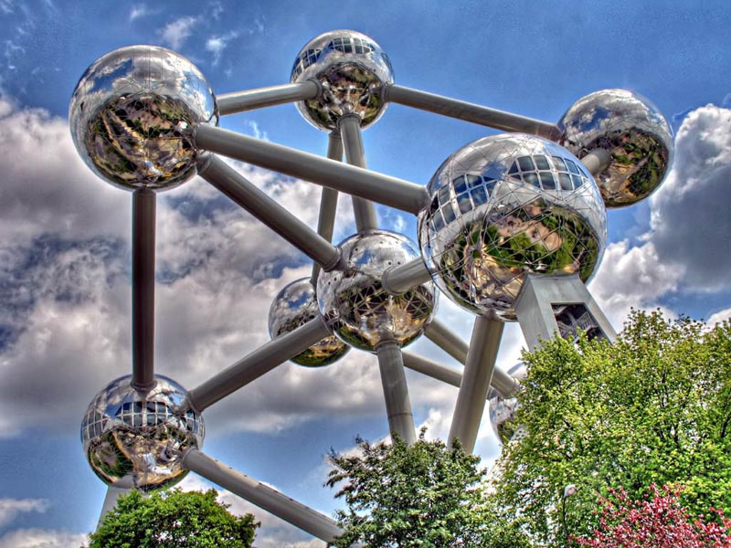
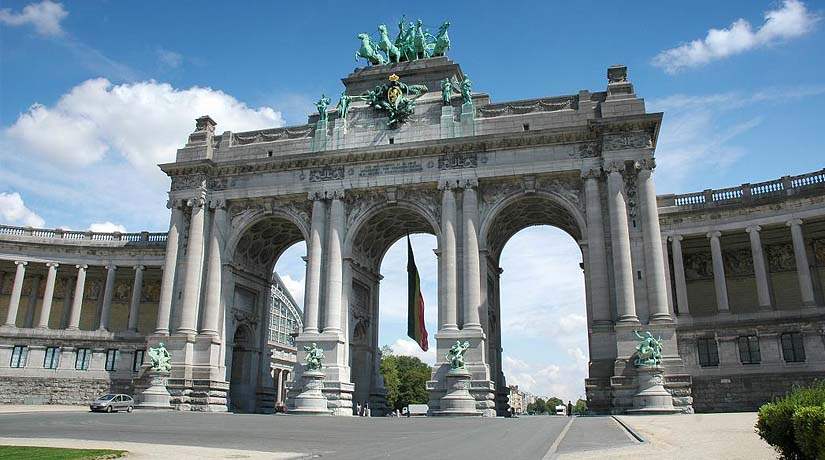

Bruselas
Por querer comer el mejor chocolate o beber las mejores cervezas del mundo, por estar tan cerca de España, por poder encontrar vuelos casi regalados, porque os han hablado muy bien de la ciudad, porque os gustan los mejillones o porque siempre habéis querido conocer al descarado Manneken Pis, símbolo de la ciudad. Bruselas es la capital de Bélgica pero también la capital europea. Es una ciudad que reúne las características de una gran urbe junto con el encanto de las pequeñas ciudades más tranquilas. Modernas pero con un toque clásico, las calles de Bruselas están cargadas de encanto y de historia.

Dominique: Si piensas en Bruselas, probablemente te vengan a la mente el Atomium, la Grand Place y el Manneken Pis. Pero la ciudad tiene mucho más que ofrecer. Estas son siete razones por las que deberías visitar nuestra bella capital según Lonely Planet y Use-It.
El Atomium es uno de los símbolos emblemáticos de Bruselas. Con sus 103 metros de altura representa un átomo de hierro aumentado 200.000 millones de veces y fue totalmente renovado en 2005.
El Manneken pis es el símbolo más representativo y conocido de Bruselas. Todos los souvenires relacionados con la capital europea tienen como protagonista al Niño Meón o el Atomium.
La Grand Place de Bruselas es el centro histórico de la capital belga y uno de los lugares más concurridos de la ciudad. Descrita por Victor Hugo como "la plaza más hermosa del mundo", ha sido declarada Patrimonio Mundial por la UNESCO. Una parada obligatoria en vuestro viaje a Bélgica.

Considerada la mejor cervecería del mundo es una parada obligatoria para todos aquellos que visiten Bruselas. Tiene la mayor variedad de cervezas del mundo.
Ubicado en la zona europea y escasos metros de la comisión europea el parque del cincuentenario es unos de los símbolos de Bruselas. Construido para celebrar el cincuenta aniversario de la independencia de Bélgica por el Rey Leopoldo II.
